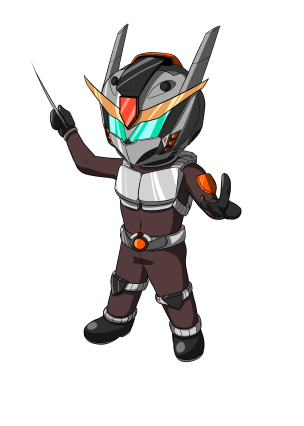

TUTORIAL
Recursos

Metal
El recurso conocido como "Metal", lo usamos para poder construir y ampliar nuestros ejercitos.
Podremos construir una gran Flota junto a montones de estructuras defensivas que nos ayudaran
a mantener a ralla a los invasores.
El metal se consigue con el pasar del tiempo y con los restos de chatarra despues de librar una
batalla.
Se utiliza para construir naves y defensas y se obtiene con el tiempo y con chatarra despues de una batalla.

Deuterio
El recurso conocido como "Deuterio", lo usamos para poder construir y ampliar nuestros ejercitos.
Podremos construir una gran Flota junto a montones de estructuras defensivas que nos ayudaran
a mantener a ralla a los invasores.
A demas, se utiliza para mejorar los niveles de nuestras tecnologias, tanto las de ataque como las
de defensa.
El Deuterio se consigue con el pasar del tiempo y con los restos de chatarra despues de librar una
batalla.
Se utiliza para construir naves y defensas y se obtiene con el tiempo y con chatarra despues de una batalla.
Flota

Flota
Para defendernos de los invasores, podemos construir una flota compuesta por 4 tipos diferentes de naves. Tenemos los LightHunters, los HeavyHunters, los Battle Ship y los Armored Ship. Cada uno tiene distintas caracteristicas de ataque y defensa igual que un costo de fabricacion diferente.
Cuatro tipos difetentes de naves con caracteristicas y precios distintos.

Light Hunter
Esta nave tiene un ataque base de 80 y una armadura base de 400, lo que la hace la mas debil de todas
pero en compensacion es la nave que menos cuesta de fabricar.
Recomendable usarla en grandes cantidades.

Heavy Hunter
Esta nave tiene un ataque base de 150 y una armadura base de 1000, es la nave promedio, ni muy cara ni muy barata. Es ampliamente superior a la nave Light Hunter, y no es altamente cara en comparacion.
Defensas

Defensas
Tambien podremos construir hasta tres tipos de estructuras de defensa, los Missile Launcher, los Ion Cannon y los Plasma Cannon.
Cada uno con distinta potencia, precision, etc.
Igual que las naves, nos supondra un costo de metal y deuterio diferente en base a que estructura construyamos.
Tres tipos de defensas con caracteristicas y precios distintos.
Enemigos
Zerathianos (General Zerak)
En los confines del universo, los Zerathianos, una raza alienígena de piel dorada y ojos resplandecientes, liderados por el temible General Zerak, conquistan planetas en busca de recursos. En una batalla épica contra los pacíficos habitantes de Alphara, los Zerathianos se enfrentan a la valiente resistencia de la Princesa Lyra y su pueblo. A pesar de su poderío, la determinación y unidad de los Alpharianos logran expulsar a los invasores, convirtiendo su historia en una leyenda de esperanza y coraje en la lucha contra la oscuridad en el universo.
Los Zerathianos, una raza alienígena de piel dorada y ojos resplandecientes liderados por el temible General Zerak, conquistan planetas en busca de recursos en el universo.
Cybrixianos (Cerebro Maestro Cybrix)
Los Cybrixianos, una enigmática raza alienígena hyperinteligente mitad organismo vivo y mitad máquina, han recorrido galaxias en busca de conocimiento y tecnología avanzada. Bajo el liderazgo del Cerebro Maestro Cybrix, han establecido una red intergaláctica de intercambio de sabiduría con civilizaciones alienígenas, desafiando los límites de la comprensión cósmica. Su presencia es una mezcla de misterio y admiración en el universo, siendo vistos como los guardianes de la evolución tecnológica y el pensamiento superior.
Los Cybrixianos, una enigmática raza alienígena hyperinteligente mitad organismo vivo y mitad máquina, han recorrido galaxias en busca de conocimiento y tecnología avanzada.